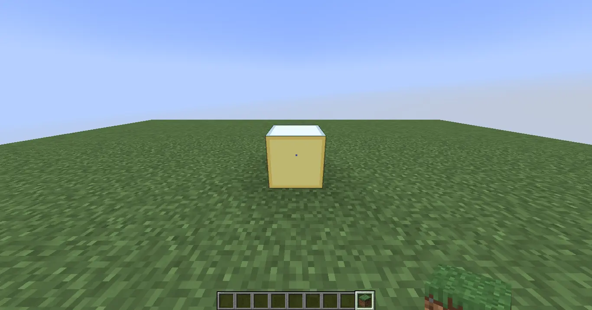
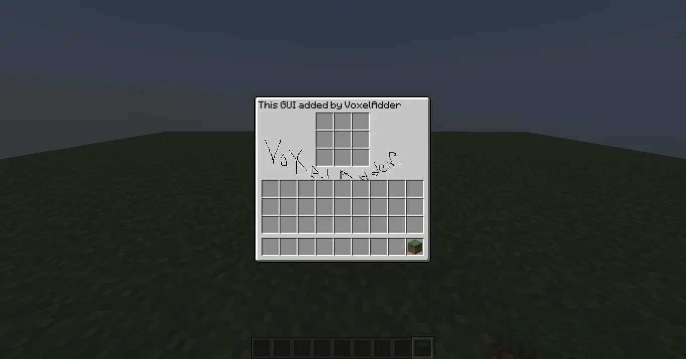

For the best experience, use Landscape or Desktop Mode.
Wellcome to
VoxelAdder
This plugin can add |to minecraft
in both editions
VoxelAdder is a powerful plugin that can bring custom content into Minecraft effortlessly. With VoxelAdder, you can add blocks, items, GUIs, armors, and more—without worrying about compatibility issues. It also supports cross-platform usage, allowing your custom content to work in Minecraft Bedrock/Pocket Edition through the GeyserMC plugin in just a few clicks. VoxelAdder includes a flexible export system, making your creations usable across a wide range of platforms and loaders, including Forge, Fabric, NeoForge, Paper, Spigot, Folia, Velocity, BungeeCord, Waterfall, Arclight, and even vanilla Minecraft.
Block
VoxelAdder provides a robust framework for adding new blocks to Minecraft.
• Rendering: Includes two specialized rendering paths for optimal block display. • API/Events: Extensive event support including OnPlace, OnBreak, and RelativeTick for advanced block behavior. • Model Support: Full synchronization between block and item models, allowing for easy visual modifications without compatibility errors.

Item
Add limitless new items to your game without sacrificing a single vanilla asset. VoxelAdder leverages modern systems to ensure your custom gear feels native to Minecraft.
• Non-Destructive Integration: Uses the CustomModelData (CMD) system to add new items without replacing or overwriting original Minecraft items. Advanced Event Triggers: Go beyond basic interactions with a deep library of item-specific events: • Inventory & Slot Ticks: Run logic every tick the item is in a player's inventory.
GUI
It can add custom GUIs to minecraft. just that much info :)

Armor
VoxelAdder can add GUIs to minecraft.
Future Plans
• Animations: Trying to add animation, making it perfect and high-performance (out of experimental phrase). • Custom Entity Framework: Working on custom entity AI with models and also Events/Triggers • Performance & Optimization: Continuous internal refinements to ensure the plugin remains lightweight and high-performance.
Features
• Native support for most plugin loaders and Vanilla environments. Seamlessly bridge the gap with Bedrock Edition via GeyserMC. • Take control with specialized triggers: from item drops and pickups to complex GUI ticks, armor updates, and block-relative logic. • Build advanced custom content through an intuitive visual editor designed specifically for beginners and power users alike. • Very easy to setup